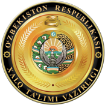
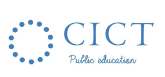
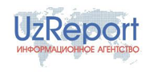

Biz haqimizda
ООО «Kundalik» - o‘qituvchilar, o‘quvchilar, ota-onalar, ta’lim muassasalari ma’muriyatlari hamda ta’limni boshqarish organlari vakillari uchun yagona elektron ta’lim platformasini ishlab chiquvchi AT kompaniyasidir.
- Faoliyatning muhim yo‘nalishlari:
- Maktab ta’limini raqamlashtirish.
- Ta’lim jarayoniga yetakchi AKTni integratsiya qilish.
- “O‘qituvchi – o‘quvchi – ota-ona” interaktiv kommunikatsiyasini rivojlantirish.
- Masofaviy va mustaqil ta’lim uchun imkoniyatlarni amalga oshirish.
- Maktab o‘quv dasturi doirasida fanlarni qo‘shimcha o‘rganish uchun multiservisli onlayn-platformani ishlab chiqish.
Kundalik 2021 yil oktabrda “Uznet”da eng ko‘p tashrif buyurilgan saytlar uchligiga kirdi. Alexa tahliliy portal ma’lumotlariga ko‘ra.
Kompaniyaning asosiy mahsuloti – Kundalik raqamli ta’lim platformasidir. Tizim - onlayn rejimda darslarning jadvalini tuzish, o‘qituvchilar uchun darsbay rejalarni shakllantirish, davomat va o‘quvchilarning o‘zlashtirishini jurnal va kundalikning elektron shakllarida qayd etish, shuningdek, ta’lim tashkilotlari va ta’lim organlariga statistik hisobot tuzish vositalarini taqdim etish imkonini beradi. “Kundalik” o‘quvchilar va ularning ota-onalari uchun tunu-kun baho va uy vazifalarini, samarali muloqot uchun himoyalangan tarmoqni va qo‘shimcha ta’lim manbalaridan foydalanish imkoniyatini taqdim etadi.
Kundalik xizmatlari o‘qituvchilar, o‘quvchilar hamda ularning ota-onalari uchun mobil ilova shaklida ham mavjud.
Telegram kanal, Instagram, Facebook, kompaniyaning “YouTube”dagi video-blogida hamda Yandex.Dzen blogida o‘qituvchilar, ma’murlar va ota-onalar uchun dolzarb yangiliklar, video yo‘riqnomalar taqdim etilgan.
Hamkorlarimiz
- 
- 
OAV biz haqimizda
- 